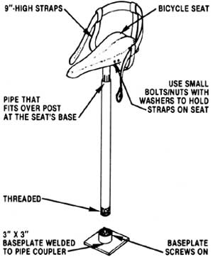

Few flavors can compete with the succulent sweetness of a fresh strawberry. Then again, few fruits are as backbreakingly difficult to harvest as these low-tothe-ground red edibles. However, berry lovers, take heart: I've designed a contraption that should ease many of the aches and pains so familiar to strawberry harvesters.
I came upon the design idea for this device by accident when, about a year ago, some friends of mine in Oregon asked me to help them find a way to speed up their strawberry harvest.
Dedicated inventor (and friend) that I am, I couldn't let them down, so I took to the drawing board right away. Even though I tried everything I could think of, nothing looked promising. I was almost ready to give up until, while visiting a farm sale, I spotted an old-fashioned one-legged milking stool with a waist strap. Could the perfect solution to my friends' picking woes, I asked myself, already have been invented? In any case, I bought the strap-on seat and gave it to my friends to let them answer that question for themselves.
Several months later, I visited Oregon during the picking season to see how things were going. Well, the word had gone out that "the inventor" was on the scene, and I was treated like a visiting monarch. As it turned out, that crazy milking stool had worked so well that it had been irreparably broken from overuse.
Now vintage milking seats are mighty hard to come by these days, but-as I said-I'm an inventor. It took me little time to come up with the design for a simulated one-legged milking stool. So, if you're a strawberry grower on a small or large scale (or if you're simply a home gardener with lots of low-down chores to do), you might just profit from my easy-to-follow plans for the Strawberry Picker's Delight.
|
 |
|
|